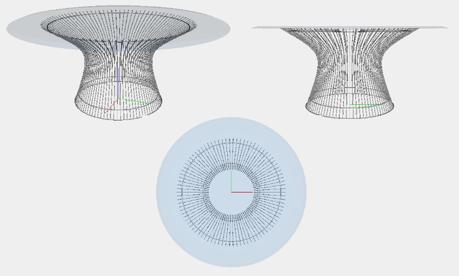

Coffè Table
The Original

Warren Platner’s Coffee Table is an enduring icon of 60’s modernist design. The beautiful sculptural steel wire base resembles a shiny sheaf of wheat. The durable construction has versatile functionality giving it a unique look which will fit into any modern, style-led surrounding. Notable for his extensive use of wire in his designs, the famous and talented Warren Platner is also known for his commercial and residential projects, such as the Georg Jensen Design Centre in New York.
INFURN produces the classic piece with a framework handcrafted from stainless steel wire staffs, which are welded in a line around a ring. The under frame is built with a transparent injection of molded plastic, providing a smooth lower surface. The clear glass plate is 12mm thick.
The Model
The Base
The model of the base is composed by two parts:
- Vertical Elements
- Horizzontal Elements
Vertical Elements
The vertical elements were created with the function 'cerchioTondino' which has the task of creating a rod of circular cross-section and replicate it in a circle 90 times.
After you create a vertical element it has been replicated 90 times on a circle with the functions 'ROTATE' and 'REPLICA'.
/* Crea un tondino circolare */
var telaio = function() {
var numPil = 90;
var line1 = BEZIER(S0)([[5.409, 0, 4.698], [4.157, 0, 3.94], [4.09, 0, 3.969], [4.667, 0, 2.383]]);
var line2 = BEZIER(S0)([[5.379, 0, 4.698], [4.147, 0, 3.95], [4.07, 0, 3.969], [4.652, 0, 2.383]]);
var sur1 = MAP(CUBIC_HERMITE(S1)([line1,line2,[0,0.035,0],[0,-0.035,0]]))(domain2d);
var sur2 = MAP(CUBIC_HERMITE(S1)([line1,line2,[0,-0.035,0],[0,+0.035,0]]))(domain2d);
var pil1 = TRANSLATE([0,2])([-3.359,-2.383])(STRUCT([sur1,sur2]));
var pilTot = STRUCT(REPLICA(numPil)([pil1,ROTATE([0,1])(2*PI/numPil)]))
var tond1 = cerchioTondino(1.305,0.02);
var tond2 = TRANSLATE([2])([0.236])(cerchioTondino(1.185,0.02));
var tond3 = TRANSLATE([2])([2.227])(cerchioTondino(1.865,0.02));
var telaio = STRUCT([/*pilTot,*/tond1,tond2,tond3]);
return telaio;
}Horizzontal Elements
The horizontal elements were created with the function 'cerchioTondino' which has the task of creating a rod of circular cross-section diameter 'diam' in the shape of a circle having a radius 'r'.
/* Crea un tondino circolare di raggio r e sezione circolare di diametro diam */
function cerchioTondino (r,diam){
var k = 1.6568;
var rOut = r+diam;
var c1 = CUBIC_HERMITE(S0)([[r,0,0],[0,r,0],[0,+k*r,0],[-k*r,0,0]]); // # 1° quadrante
var c2 = CUBIC_HERMITE(S0)([[r,0,0],[0,-r,0],[0,-k*r,0],[-k*r,0,0]]); // # 2° quadrante
var c3 = CUBIC_HERMITE(S0)([[-r,0,0],[0,-r,0],[0,-k*r,0],[+k*r,0,0]]); // # 3° quadrante
var c4 = CUBIC_HERMITE(S0)([[-r,0,0],[0,r,0],[0,+k*r,0],[+k*r,0,0]]); // # 4° quadrante
var c1a = CUBIC_HERMITE(S0)([[rOut,0,0],[0,rOut,0],[0,+k*rOut,0],[-k*rOut,0,0]]); // # 1° quadrante
var c2a = CUBIC_HERMITE(S0)([[rOut,0,0],[0,-rOut,0],[0,-k*rOut,0],[-k*rOut,0,0]]); // # 2° quadrante
var c3a = CUBIC_HERMITE(S0)([[-rOut,0,0],[0,-rOut,0],[0,-k*rOut,0],[+k*rOut,0,0]]); // # 3° quadrante
var c4a = CUBIC_HERMITE(S0)([[-rOut,0,0],[0,rOut,0],[0,+k*rOut,0],[+k*rOut,0,0]]); // # 4° quadrante
var sur1 = MAP(CUBIC_HERMITE(S1)([c1,c1a,[0,0,diam*2],[0,0,-diam*2]]))(domain2d);
var sur1a = MAP(CUBIC_HERMITE(S1)([c1,c1a,[0,0,-diam*2],[0,0,diam*2]]))(domain2d);
var sur2 = MAP(CUBIC_HERMITE(S1)([c2,c2a,[0,0,diam*2],[0,0,-diam*2]]))(domain2d);
var sur2a = MAP(CUBIC_HERMITE(S1)([c2,c2a,[0,0,-diam*2],[0,0,diam*2]]))(domain2d);
var sur3 = MAP(CUBIC_HERMITE(S1)([c3,c3a,[0,0,diam*2],[0,0,-diam*2]]))(domain2d);
var sur3a = MAP(CUBIC_HERMITE(S1)([c3,c3a,[0,0,-diam*2],[0,0,diam*2]]))(domain2d);
var sur4 = MAP(CUBIC_HERMITE(S1)([c4,c4a,[0,0,diam*2],[0,0,-diam*2]]))(domain2d);
var sur4a = MAP(CUBIC_HERMITE(S1)([c4,c4a,[0,0,-diam*2],[0,0,diam*2]]))(domain2d);
var cerchio = TRANSLATE([2])([diam/2])(STRUCT([sur1,sur1a,sur2,sur2a,sur3,sur3a,sur4,sur4a]));
return cerchio;
}The Glass
The glass was created using as main function HERMITE because this is a ground glass.
This is the function used to create the glass, parametric with respect to minor radius, larger radius and thickness
/* Crea un vetro circolare molato, con raggio maggiore rmax, raggio minore rmin e */
* spessore s */
var vetro = function(rmin,rmax,s) {
var k = 1.6568;
var c1 = CUBIC_HERMITE(S0)([[rmin,0,s],[0,rmin,s],[0,+k*rmin,s],[-k*rmin,0,s]]); // # 1° quadrante
var c2 = CUBIC_HERMITE(S0)([[rmin,0,s],[0,-rmin,s],[0,-k*rmin,s],[-k*rmin,0,s]]); // # 2° quadrante
var c3 = CUBIC_HERMITE(S0)([[-rmin,0,s],[0,-rmin,s],[0,-k*rmin,s],[+k*rmin,0,s]]); // # 3° quadrante
var c4 = CUBIC_HERMITE(S0)([[-rmin,0,s],[0,rmin,s],[0,+k*rmin,s],[+k*rmin,0,s]]); // # 4° quadrante
...
...
return vetro;
}